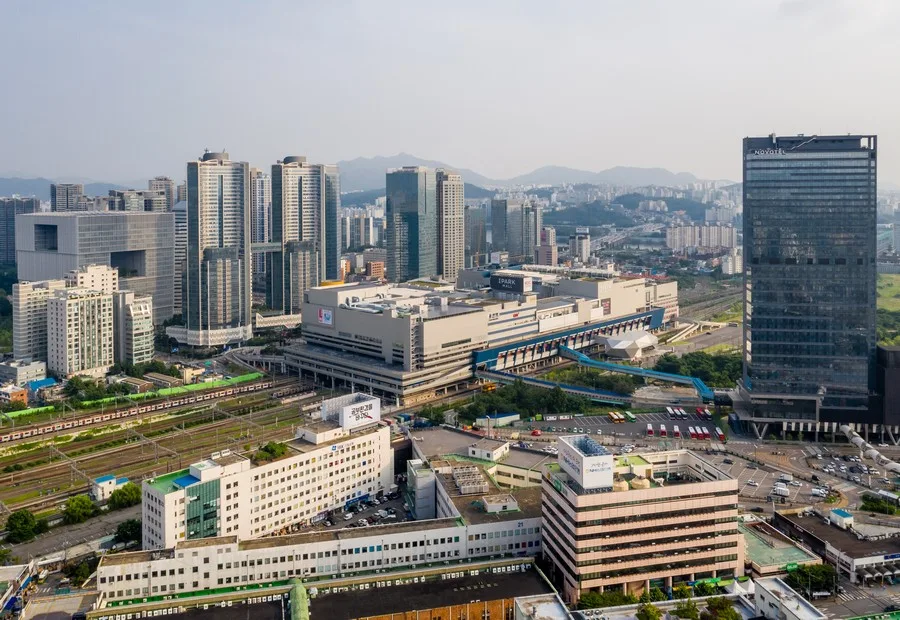
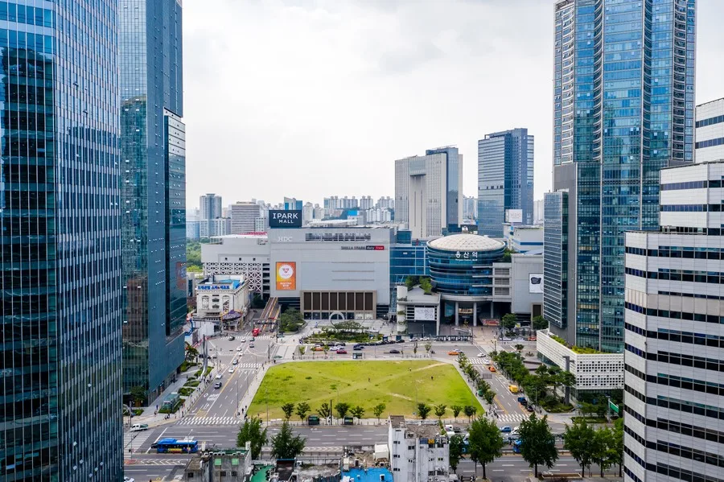
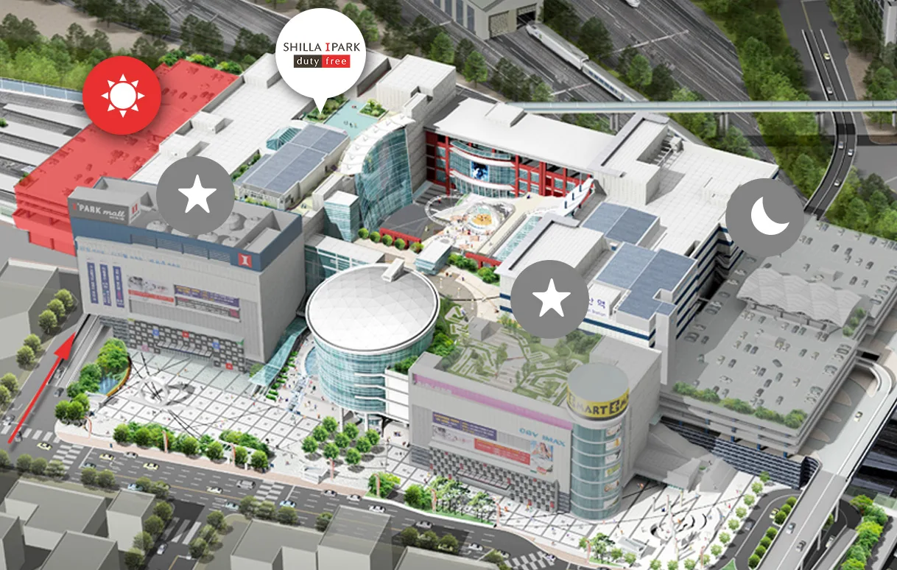
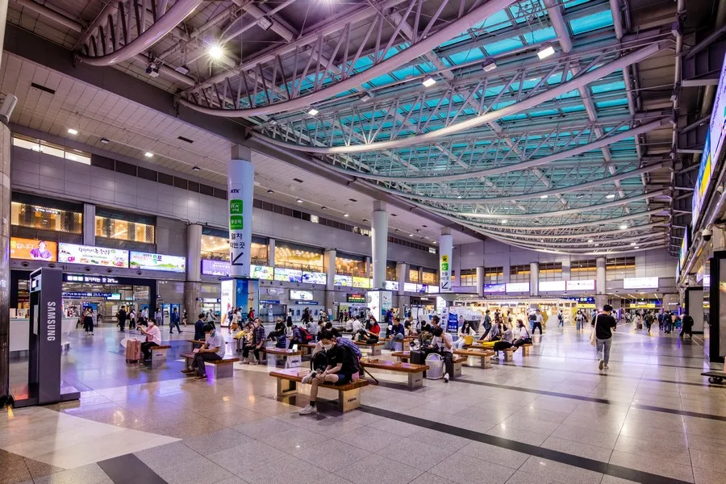
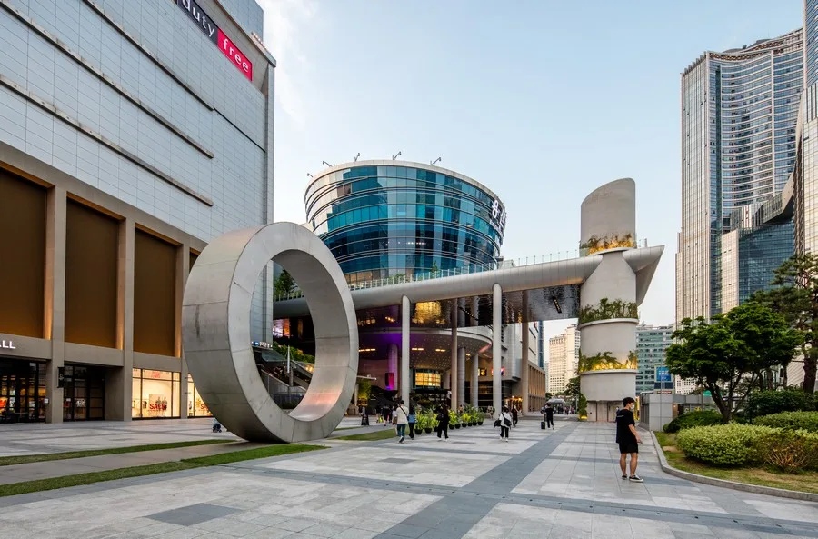

▲ 야간의 용산 아이파크몰 전경. 기본 주차요금은 비싼 편이지만 할인 조건을 챙기면 부담을 크게 줄일 수 있다 ⓒ 서울연구원 서울연구데이터서비스
용산 아이파크몰의 기본 주차요금표만 보면 선뜻 차를 끌고 가기가 망설여진다. 하지만 몇 가지 할인 조건을 미리 알아두면 실제 부담은 생각보다 크게 줄어든다.

▲ 용산역·아이파크몰 항공 전경. 철로 위에 지어진 복합몰답게 해·달·별 3개 주차장이 건물 곳곳에 나뉘어 있다 ⓒ 서울연구원 서울연구데이터서비스
1. 기본요금 — 10분당 1,500원의 체감

▲ 낮 시간 아이파크몰 외관. 해·달·별 3개 주차장을 합쳐 약 2,500면 규모로 운영된다 ⓒ 서울연구원 서울연구데이터서비스
아이파크몰의 기본 주차 요금은 2026년 3월 3일 요금 개편 이후 10분당 1,500원이며, 1시간이면 9,000원이 부과된다. 주차장에 들어왔다가 다시 나가는 회차 무료 혜택도 없고, 할인은 당일 영수증에 한해 최대 5시간까지만 적용된다. 할인 조건 없이 이용하면 체감 비용이 상당히 크기 때문에, 아래에서 설명할 시설별 할인이나 KTX 할인, 앱 쿠폰 중 하나라도 챙기는 것이 중요하다. 주차 요금 관련 문의는 02-2012-0074~0075, 주차 시설 관련 문의는 02-2012-0069로 하면 된다.
2. 해·달·별 3개 주차장 — 위치와 이용 팁

▲ 아이파크몰 해(빨강)·별·달 주차장 위치 안내도. 방문 목적에 따라 가까운 주차장을 미리 골라두면 동선이 짧아진다 ⓒ 신라아이파크면세점
아이파크몰 주차장은 위치와 연결 시설이 각기 다른 해·달·별 3개 구역으로 나뉜다. 처음 방문한다면 목적지에 맞는 주차장을 미리 알아두는 것이 좋다.
| 구역 | 위치 | 가까운 시설 | 비고 |
|---|---|---|---|
| 해 주차장 | 남측 | 신라아이파크면세점 | 면세점 고객 전용 |
| 달 주차장 | 북측 3층~5.5층 | 패션관, CGV, 풋살경기장 | 영화관 이용 시 가장 가까움 |
| 별 주차장 | 지하 1층~3층 | 이마트 | 여성전용 주차구역 별도 운영 |
※ 세 주차장 모두 24시간 무인 운영되며, 요금·할인 조건은 동일하게 적용된다. 위치와 층수는 리모델링 등으로 조정될 수 있어, 방문 전 아이파크몰 공식 홈페이지에서 최신 안내를 다시 확인하는 것이 안전하다.
3. KTX 왕복 티켓 — 50% 할인의 조건

▲ 용산역 KTX 대합실. 왕복 승차권을 갖고 있으면 12시간 이내 주차요금의 50% 할인을 받을 수 있다 ⓒ 서울연구원 서울연구데이터서비스
용산역에서 KTX 왕복 티켓을 갖고 있다면 12시간 이내 주차 요금의 50% 할인을 받을 수 있다. 12~24시간 구간은 별도 할인율 대신 46,800원 정액 요금이 적용된다. 다만 이 할인은 열차 승차권 등 관련 증빙이 있을 때만 적용되며, 다른 구매 할인과 중복 적용은 불가하다. 출차할 때는 일반 정산소가 아니라 직원 호출 버튼을 눌러 관제실과 통화한 뒤 증빙을 제시해야 하므로, 시간 여유를 두고 출차하는 것이 좋다. 반대로 용산역 내 매장 구매 영수증이나 단순 지하철 이용, 배웅객은 이 할인 대상이 아니라는 점도 참고할 만하다. KTX를 이용해 용산역에 도착한 뒤 아이파크몰까지 들러 쇼핑이나 식사를 하는 동선이라면, 이 할인을 놓치지 않는 것이 중요하다.
4. 시설 이용 할인 — 어디서 얼마나 써야 하나

▲ 아이파크몰 앞 광장 입구. 매장·시설별로 무료 주차 시간이 다르게 책정돼 있어 영수증을 챙겨두는 것이 유리하다 ⓒ 서울연구원 서울연구데이터서비스
아이파크몰 내 시설을 이용하면 무료 주차 시간을 적용받을 수 있는데, 이 할인 시간은 시설마다 다르게 책정돼 있다. 신라아이파크면세점·패션파크·리빙파크·이마트는 구매 금액에 따라 최대 5시간까지 할인 폭이 늘어나고, CGV는 결제 금액과 무관하게 티켓만 있으면 3시간이 할인된다. 방문 목적에 맞는 시설의 할인 조건을 미리 확인해두면 체감 주차비를 크게 줄일 수 있다.
| 이용 시설 | 할인 조건 | 할인 시간 |
|---|---|---|
| 신라아이파크면세점·패션파크·리빙파크·이마트 | 2만원 이상 구매 | 1시간 |
| 〃 | 4만원 이상 구매 | 2시간 |
| 〃 | 6만원 이상 구매 | 3시간 |
| 〃 | 10만원 이상 구매 | 4시간 |
| 〃 | 20만원 이상 구매 | 5시간 |
| CGV | 티켓 수량 무관 | 3시간 |
| 테이스트파크·영풍문고·대원미디어·VR존 등 | 결제 금액 무관 | 2시간 |
| 카페·편의점·약국·전시관 | 결제 금액 무관 | 1시간 |
| 한샘디자인파크·하이마트·나이키·H&M 등 기타 임대매장 | 결제 금액 무관 | 3시간 |
※ 서울시 교통정책과 지침에 따라 주차 할인은 매장 이용 여부와 관계없이 최대 5시간까지만 적용되며, 무료 회차는 없다. 일부 매장은 할인 조건이 달라질 수 있으니 출차 전 정산 내용을 확인하는 것이 안전하다.
아이파크몰 주차 요금·할인 공식 안내에서 확인 가능5. 앱 쿠폰 발급과 사용법 — 사실상 무료도 가능
주차비 절약 팁
- 앱스토어·플레이스토어에서 '아이파크몰'을 검색해 앱을 설치하고 푸시 알림에 동의해둔다.
- 푸시에 동의한 회원은 매월 말일 자동으로 300분 무료 주차 쿠폰이 발급된다(평일 월~금 한정, 주말·공휴일 제외).
- 출차 전 티켓발권기 주차정산 메뉴나 앱 화면에서 쿠폰을 적용해 결제하면 된다.
- 시설 이용 할인으로 남는 주차비가 있다면 쿠폰으로 추가 결제한다.
- KTX 이용객이라면 12시간 이내 50% 할인과 앱 쿠폰을 함께 적용해본다.
아이파크몰 앱에서 발급받는 무료 주차 쿠폰은 매달 300분까지, 평일에만 사용할 수 있다. 별도로 신청할 필요 없이 앱 푸시 알림에 동의해두면 매월 말일 자동으로 다음 달 쿠폰이 발급되는 방식이라, 한 번만 설정해두면 이후로는 신경 쓸 일이 없다. 주말 방문이거나 쿠폰 소진 후라면 시설 이용에 따른 할인 시간만 적용되므로, 남는 주차비가 완전히 없어지지 않을 수도 있다는 점은 감안해야 한다. 카카오T 자동결제로 등록한 차량은 앱 쿠폰 할인이나 사전 정산이 되지 않는 경우도 있어, 결제 수단을 미리 확인해두는 것이 좋다. 그래도 KTX 할인과 시설 할인, 앱 쿠폰을 평일에 함께 적용하면 체감 비용을 크게 낮출 수 있다.
6. 알아두면 좋은 주의사항
체크포인트
- 복지카드·철도 할인 등 외부 할인은 출차 시 정산소에서 직원 호출 버튼을 눌러 관제실과 통화해야만 적용된다.
- 전기차 전용 주차 할인은 별도로 제공되지 않는다.
- 출차 후에는 주차 요금 추가 할인이나 재정산이 불가능하므로, 정산은 출차 전에 마쳐야 한다.
- 용산역 내 매장 구매 영수증이나 단순 지하철 이용객, 배웅객은 주차 할인 대상이 아니다.
7. 정리
체크포인트
- 기본 주차요금은 10분당 1,500원(2026년 3월 개편)으로 비싼 편이다.
- 목적지에 맞춰 해·달·별 3개 주차장 중 가까운 곳을 미리 골라두자.
- 이용 시설에 따라 1~5시간의 무료 주차 시간이 차등 제공된다.
- KTX 왕복 티켓이 있다면 12시간 이내 50% 할인을 받을 수 있다.
- 앱 쿠폰(월 300분, 평일 한정)까지 챙기면 추가 비용을 거의 없앨 수 있다.